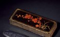
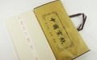

笔
是一种源于中国的传统书写工具，也逐渐成为传统绘画工具。毛笔是古代中国人民在生产实践中发明的。随着人类为促进中华民族与世界各族的文化交流，做出了卓越的贡献。毛笔是中华民族对世界艺术宝库提供的一件珍宝。
墨
墨，中国传统文房用具之一，是书写、绘画的黑色颜料，后亦包括朱墨和各种彩色墨。 墨的主要原料是煤烟、松烟、胶等，是碳元素以非晶质型态的存在。通过砚用水研磨可以产生用于毛笔书写的墨汁，在水中以胶体的溶液 存在。
纸
由于宣纸有易于保存，经久不脆，不会褪色等特点，故有“纸寿千年”之誉。宣纸的原材料主要是青檀.宣纸按加工方法分为原纸和加工纸。按纸张洇墨程度分为生宣、半熟宣和熟宣。熟宣是采用特种再加工技术形成更多花色品种的加工宣纸，主要分蜡宣、 矾宣、色宣、色矾宣等百余种。书法和写意画用生宣，工笔画用熟宣。按原料配比分为棉料、净皮、特种净皮三大类。
砚

砚，也称“砚台”。中国传统文房用具，始于汉代。文房四宝之一。以笔蘸墨写字，笔、墨、砚三者密不可分。砚虽然在“笔墨纸砚”的排次中位居殿军，但从某一方面来说，却居领衔地位，所谓“四宝”砚为首，这是由于它质地坚实，能传之百代的缘故。中国四大名砚之称始于唐代，它们是端砚、歙砚、洮砚，红丝砚。
copyrigth